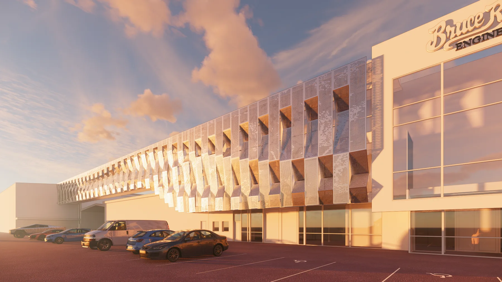
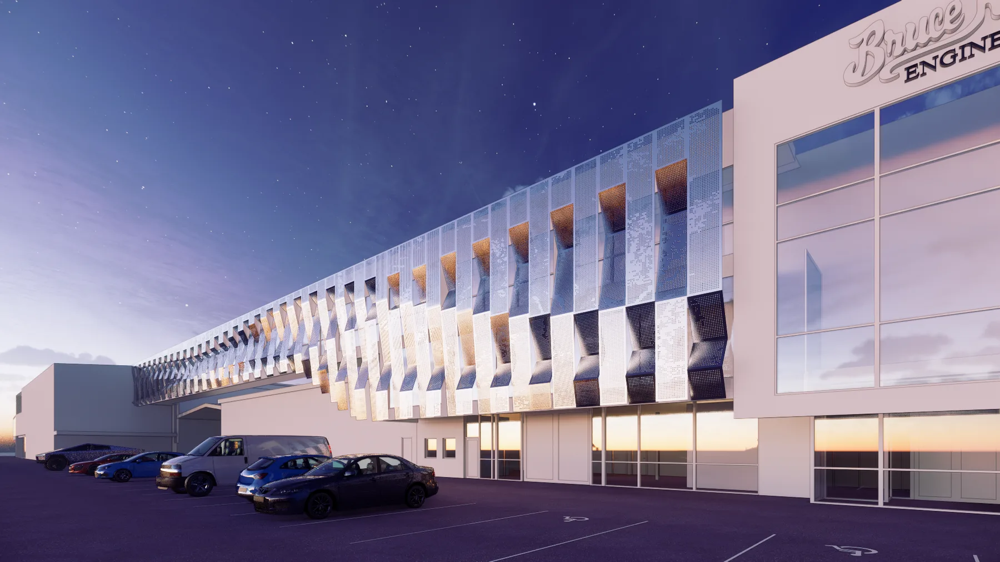
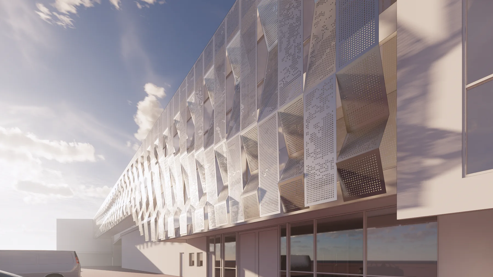
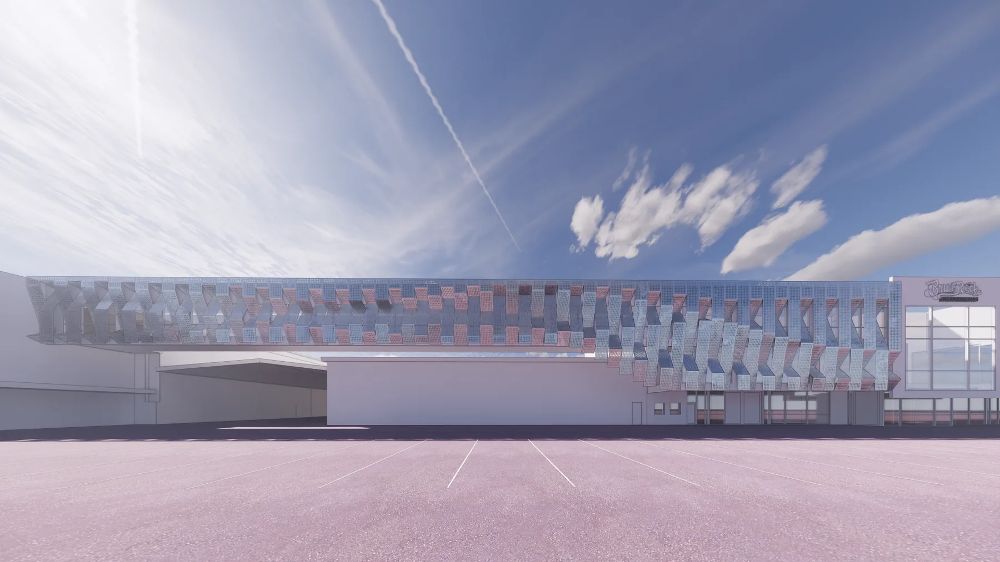
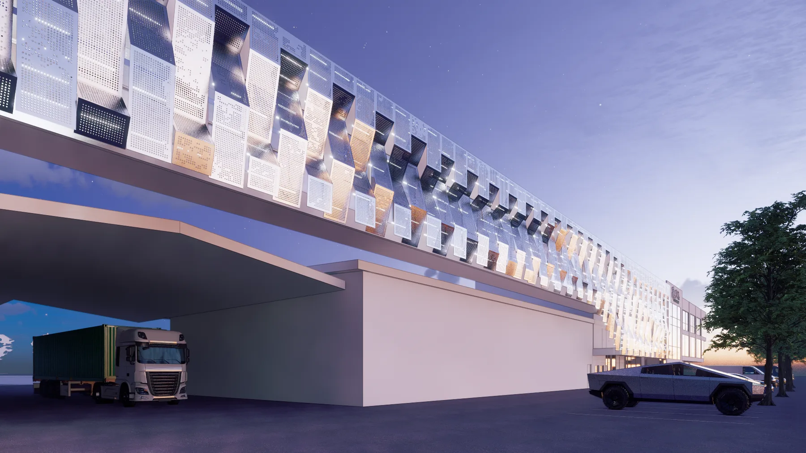
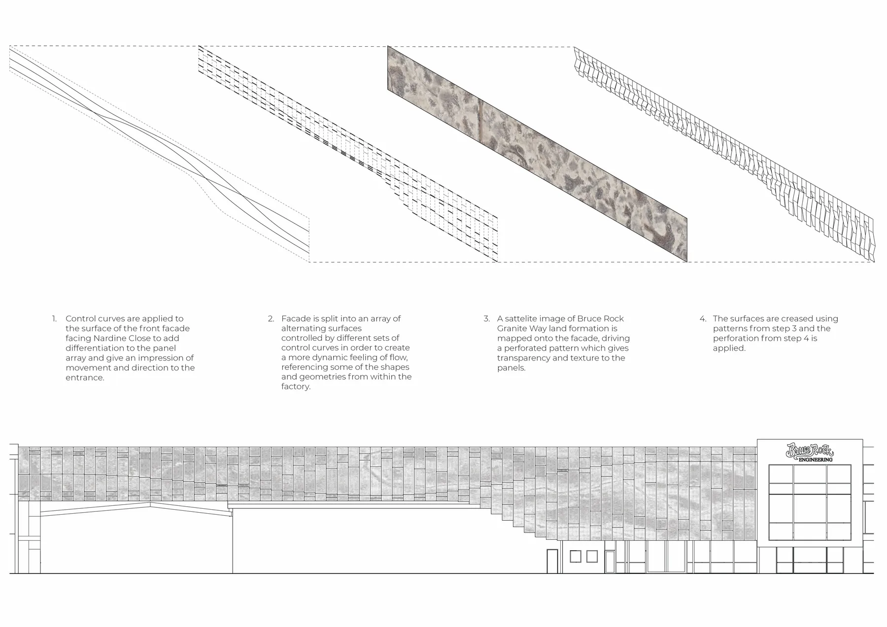

In Formation , 2021
Commissioned by Bruce Rock Engineering
Designed for Bruce Rock Engineering—a company specialising in the design, manufacture and maintenance of transport equipment—this 50-metre-long façade artwork reflects the company’s commitment to engineering precision and high-quality steel fabrication. Extending across the existing building, the work combines a fluid form with a sense of structural coherence, evoking the elongated profile of a road train moving along the highway.
The artwork comprises a sequence of 600 mm-wide vertical sections formed from perforated and folded aluminium sheets that vary in size and shape according to their position. Following a continuous pattern of interweaving curves, these sections fold across the building to create rhythm and depth. Landforms found along Bruce Rock’s Granite Way inform the perforation pattern, adding a further layer of texture and connection to place.
- Design: Andrei Smolik, Daniel Giuffre
- Year: 2021
- Client: Bruce Rock Engineering
- Size: 50m x 11.2m




